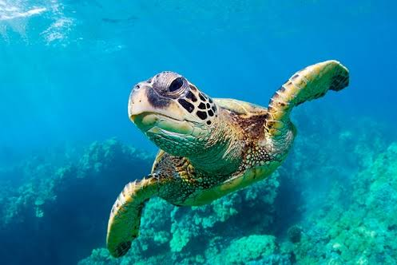
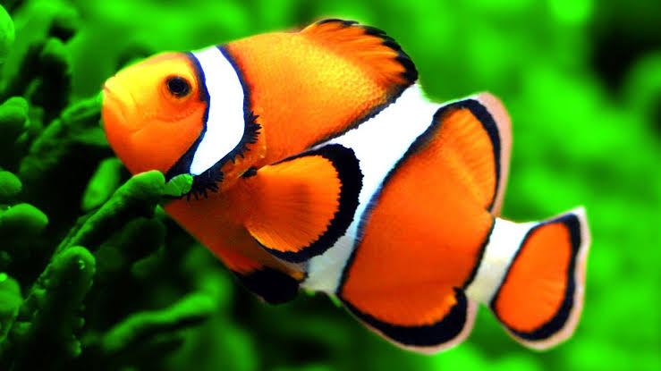
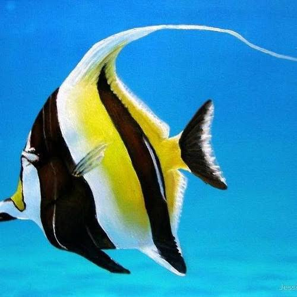

penyu adalah hewan yang banyak ditemukan bertelur di beberapa pesisir pantai di Indonesia dahulu

Ikan badut ini dapat dikenali dengan warna jingganya, ikan ini tumbuh mencapai 8 cm termasuk dalam ikan terpopuler dunia

Lion Fish atau Volitans adalah ikan berbisa milik keluarga yang Scorpaenidae terjemahan harfiah berarti kalajengking

Ikan Moorish Idol adalah salah satu ikan yang paling populer di kalangan ara hobiis ikan hias karena bentuknya yang unik dan pola warnanya yang menarik